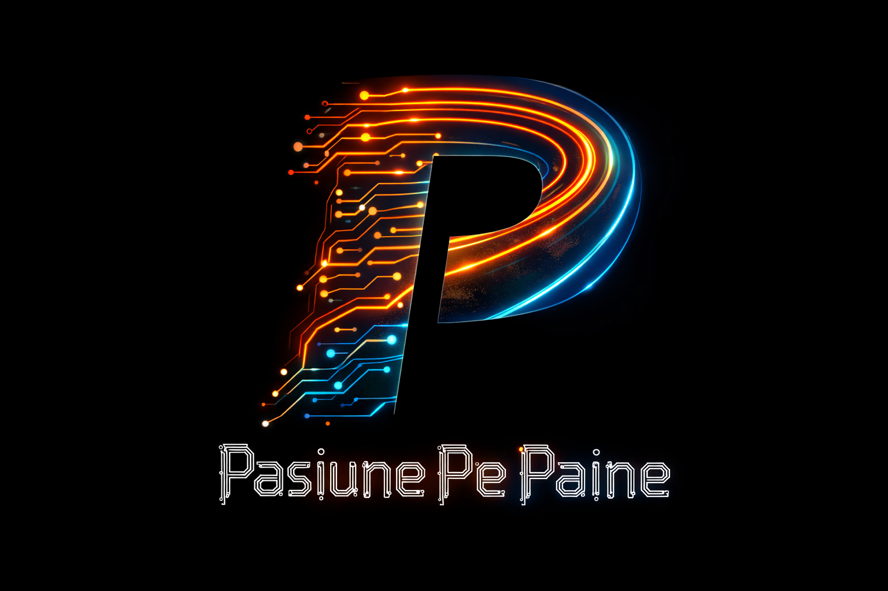

Embedded
Firmware, RTOS și sisteme multicore
01 PROIECTE / SISTEME / IDEI
Electronică, embedded, audio și automatizare — proiectate de la prima schemă până la produsul care funcționează.
Firmware, RTOS și sisteme multicore
Scheme, PCB și prototipare
HMI, display-uri și experiențe tactile
IoT, wireless și automatizare

QUASAR / RESEARCH & DEVELOPMENTLaboratorul de dezvoltare a proiectelor ↗